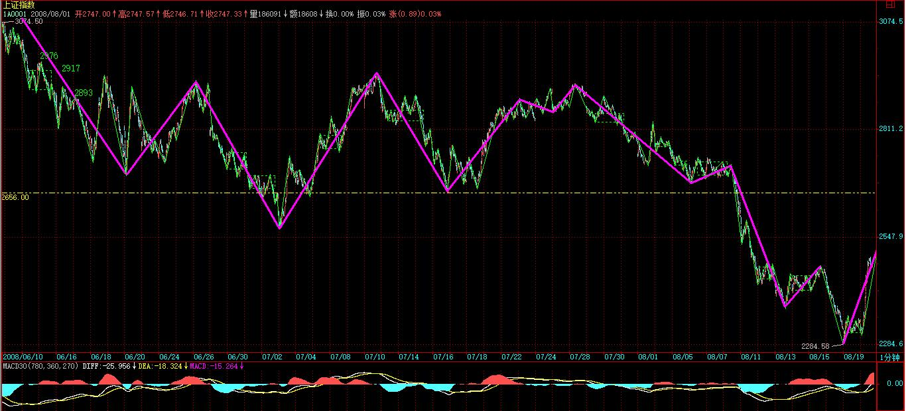

(2008-08-19 16:10:39)
今天很不顺利，那奇人似乎受到什么影响，突然改变了口风。
其中一种可能，是因为前几天本ID的帖子，这里有些本ID的朋友，例如关于肝昏迷后来转医院那事情，这里至少应该有N个以上的人亲眼见证，而且，那天胡乱打电话，后来电脑又被弟弟的同学拿去修理，其中诸多变数，本ID也不想了解，而且那奇人无意中碰进来的机会也少不了。
总之，不管什么原因，奇人以怕身体受不了为名，把本是一天一次的治疗间隔给放大了2倍，而且其手机今天也停了，不过本ID有其家里电话以及另一手机的号码，所以这并没有多大影响，但给人的感觉已经不对了，至少表明他最多把关系定位在医患关系上了。
本ID对公开谈论该事情因此而产生的后果其实也早有准备，这次之所以这样，其实也是早点解揭开些东西。如果因为这样就如此，那本ID也没必要见什么奇人了，他的方法，其实本ID早已了然，只是其中具体的细节还希望当面探讨，另外像糖尿病、爱滋病之类的东西，也希望有一个层次高的人探讨一下，互相探讨还可能激发更大的火花，但如果因缘不对，那也就算了，不过本ID暂时还不准备放弃，毕竟层次有的人太难碰到，碰到一个至少这方面不糊涂的，总不能轻易放弃。
奇人当时就说，这绝学到他这里就真绝了，他也不想传下去，如果他真坚持如此，本ID也没办法，只能说共业如此，如此就如此了。
至于本ID的病，说实在，本ID并不想现在就好，因为2002年的结6年还没解开，不解开这，本ID病好了也没意义，反而使得这个结永远解不开，这其实才是本ID迟迟不亲自下重手的原因。【韶山映山红】生，何所求？死，何所惧？问世间情为何物，直教生死相许！】
至于弟弟那里，这次奇人有缘分，那只是一个好的例子让他去思考，但按本ID对弟弟的了解，就算奇人真治好了本ID，他也不会低头的，这东西，只能靠他自己的慧命，最亲的人，其实也不能真的去解决任何问题。【韶山映山红】有人说2002年的故事是缠师连累弟弟。从这一段文字看，与弟弟无关。】
好了，没活动就继续说股票，今天的走势都在前面的分析中，具体就不用再说了，各自学习把握就可以。
这里，再强调一下一些最基本的操作问题。
其实，操作没把握，归根结底是对理论没完全彻底地把握。【韶山映山红】把握。完全。彻底。】
例如，一个最实际的问题，如果按照理论，至少有一个30分钟级别的反弹，那么具体的操作应该怎么安排？【韶山映山红】前提是，正确分析“至少有一个30分钟级别的反弹”。那么，什么情况下会“至少有一个30分钟级别的反弹”呢？★日线级别的第一、二、三类买点之后的次级别反弹。30分钟下跌趋势的本级别背驰之后的反弹。】
【韶山映山红】这一课的标题是“如何操作短线反弹”。“短线反弹”，是短线走势的一个反弹？还是做短线的人如何操作反弹？★以后研究。】
首先，你必须搞清楚反弹可能的具体走势形式，因为同样是30分钟级别，不同形式，对应的对应的操作难度与方式都是不同的，【韶山映山红】“反弹可能的具体走势形式”可能包括：视为同级别的abc线段类盘整、视为同级别的abcde线段类趋势，a+A+b盘整走势类型，a+A+b+B+c趋势走势类型。】而最大的难点在于，你并不能事先知道反弹究竟用什么的方式，因为这涉及预测，而一切预测都不能纳入操作计划的范围，只能聊天吹牛时使用。【韶山映山红】可以预测，但是不能纳入操作计划的范围。】所以要解决这难点，必须从绝对性出发，里面不能涉及任何预测。【韶山映山红】纳入操作计划的只能是绝对性的，不能涉及任何预测。】
对一个30分钟的走势类型，我们能绝对性指出的无非有一点，就是这个反弹至少有一个30分钟级别的中枢，【韶山映山红】最简单的是三段反弹构成30分钟级别的中枢。】而有这就足够了，为此就可以构造出一套绝对性的操作方法。【韶山映山红】以绝对性的最低标准为依据。】
某级别的中枢都是由三个以上次级别走势类型重叠构成，也就是说，一个30分钟的中枢，一定涉及上下上的三个5分钟走势类型。这就是构成我们操作绝对性的最坚实基础。【韶山映山红】上下上的形态结构。包括向下奔走型中枢。】
显然，没有任何绝对性可以保障上下上中，最后一个上一定有比第一个上有更高的高点，【韶山映山红】后高可以等高，还可以更低。绝对性保障的只是30分钟级别的中枢，只保证相应的结构形态，不保证具体的位置形态。】特别那种所谓奔走型的反弹，后上的高点可能只刚好触及前上的低点，【韶山映山红】“所谓奔走型的反弹”是向下奔走，而不是向上奔走。这一段原文告诉我们：只要前面的走势符合趋势背驰的判断标准，仅仅涨破前低的向下奔走型中枢也属于中枢级别的反弹。这种形态往往也构成了背了又背的现象。★以后研究。】
因此，如果你一定要等上下上都完成才抛出，那很可能面对这样的尴尬，就是你在第一个上的最低点买的，在上下上的电梯过后，你只有一个可能连手续费都不够、稍纵即逝的卖点。【韶山映山红】１，和前低相距太近，进出的差价获利连手续费都不够，甚至就是等价，那就还有赔手续费。 ２，稍纵即逝，也就是说，有，但未必有操作价值。】
因此，这种操作，注定是只有相对的理论上的绝对安全性，而没有具体操作上的绝对安全性。
要解决这个问题，只能从第一上就开始分解操作，也就是说，没必要等待第二个上了，既然每次上之后都必然有一个同级别的下，而这下的幅度又是不可能绝对控制的，所以还不如就把操作分段，让分段提供给你绝对的具体操作安全。【韶山映山红】用降级操作的方法来解决具体操作上的绝对安全性问题。】
因此，在这种分析下，具体的反弹操作一定是同次级别分解方式进行的，【韶山映山红】这个30分钟反弹本身就是同级别分解，还要进一步细分次级别，所以是同次级别分解。】也就是说，30分钟级别的反弹，是按5分钟的节奏去处理的。【韶山映山红】相当于降级操作了。或者说，结构的必然判断，都降级操作？★可以做个专题，以后研究。】
注意，这只是统一的处理方法，其实实际操作中，一旦第一上与下出现后，可能的走势形式，就有了很大的绝对性确认了，【韶山映山红】“第一上与下出现后”，“可能的走势形式”包括哪些？★如果前面是趋势背驰，“第一上”的终点位置的判断点位包括Ｂ中枢的ZD和DD、三卖点，随后的“下”的终点位置的判断点位包括Ｂ中枢的ZG、三卖点、一买点。“第一上与下”的组合可以判断反弹力度。】
例如，一个30分钟中枢后接一个第三类买点，然后非背驰力度地强劲拉升，那你就完全可以开始坐轿子，等第二中枢，甚至第三、四、五中枢完成出现背驰后第三类卖点再说了。【韶山映山红】那么，“一个30分钟中枢后接一个第三类买点，然后非背驰力度地强劲拉升，”也就意味着中枢移动，可能形成30分钟上涨趋势。】
【韶山映山红】这里“第一上与下出现后”，为什么后面的举例直接到了“一个30分钟中枢后接一个第三类买点”？中间线段类盘整背驰形成中枢的过程都置之不理？不是还应该继续降级操作吗？★以后研究。】
【韶山映山红】这里为什么要等“出现背驰后第三类卖点再说”？而不是本级别的第一类卖点或者第二类卖点？★以后研究。根据108课的底部构造的内容，顶部构造失败的标志就是新的走势类型的中枢出现第三类卖点。】
其次，更要注意，这绝对性的具体操作还不是平均效率最高的，最高的，就是保持部分仓位，用余下仓位进行换股轮动操作，【韶山映山红】换股轮动操作。】对于资金少的，这更可以全部仓位进行，不过这技术要求更高，就不多说了。【韶山映山红】仓位管理问题，“全部仓位进行”，就“技术要求更高”。★可以做个专题。以后研究。】
最后，一定不要去预测什么反弹还是反转，这根本没意义。【韶山映山红】如果预测，本质上是只分析过去已有走势的结构力的分力。】
反弹越搞越大，最后就自然成了反转，【韶山映山红】即使当下分析结果是反弹，也可能“越搞越大”，最终“成了反转”。所以预测也没有价值。 反转都是由反弹继续演化而来的。】
而是否如此，根本没必须知道，你唯一需要知道的就是，只要在第一中枢后出现第三类买点并形成非背驰类向上，才可以流着口水地持股睡觉等其余中枢形成，否则，随时都有被反回来的风险。【韶山映山红】在没出现第三类买点之前就“随时都有被反回来的风险”。出现第三类买点而没有“形成非背驰类向上”也“随时都有被反回来的风险”。即使“形成非背驰类向上”也还是可能因为小转大而“随时都有被反回来的风险”。“流着口水地持股睡觉”只是那个当下而已。★】
有人喜欢精确定义，那么这里其实也给出了什么是上升趋势形成的最精确定义，就是在第一中枢后出现第三类买点并形成非背驰类向上。趋势形成，只要趋势没有扭转的信号，当然就可以睡觉，这是太常识的东西了。【韶山映山红】下跌转折后形成新走势的第一中枢，第一中枢出现三买，三买后形成非背驰类向上，这个当下判定为上升趋势。在此之前都不能下这样的判断。 趋势扭转的信号，包括本级别背驰的一卖和小转大的二卖。】
本ID的理论，并不一定要违反常识，只是本ID的理论可以给正确的常识以合理的理论基础，这才是关键。
后面的课程，将开始具体分析各种可能的反弹类型，这对具体的盘整操作也是有极大用处的。不过必须补充的是，实际的操作效果还是必须靠磨练的，而反弹如此，回调的操作反过来就是，更不用多说。【韶山映山红】各种可能的反弹类型都有哪些？对具体的盘整操作有什么极大用处？★★★可以做个专题。以后研究。】
【韶山映山红】这一课讲的就是降级操作的问题。判断将有一个30分钟向上走势，就按照5分钟的级别分解、先买后卖的去操作这一段走势。换句话说，如果判断将有一个向下走势，就按照5分钟的级别分解、先卖后买去操作这一段走势。★以后研究。】
【韶山映山红】“向上段的运作，都是先买后卖的。一旦向上段的运作结束后，就进入向下段的运作。向下段的运作刚好相反，是先卖后买，从刚才向上段结束的背驰点开始，所有操作刚好反过来就可以。”】
(2008-08-20 15:11:18)
今天大盘死皮赖脸地又教科书了一把，本ID这两周关于三级别反弹的分析，就此被大盘完美演绎。【韶山映山红】“三级别反弹”？★总结。】后面走势，其实前面已经分析过了，就是下面要站住今天构成日底分型上边沿2455点，【韶山映山红】2455点，日线底分型左元素上沿。】
上面要尽快攻破2656点以确认第三类卖点不成立。【韶山映山红】2656是5分钟回升中枢的ZD。】
【韶山映山红】为什么向上攻破中枢ZD了，就是“确认第三类卖点不成立”？★以后研究。】是中枢扩展就不当做第三类卖点看了么？】

当然，以上表述是站在希望大盘涨的基础上说的，而实际操作，一定不能有这种想法，而是根据大盘实际走势进行机械化反应。
再强调一次，没分清级别之前就别谈什么背驰。
所谓背了又背是天经地义的事情，但对应的是不同级别，【韶山映山红】背了又背，级别不对。】否则，难道一个1分钟背驰就可以让大盘转向1000年，那不乱套了？本ID理论的基础之一是级别，不学会并完全机械化地精确把握，那还是别背驰了，因为这种水平，除了背还是背，还驰什么？
今天上来，主要配合了消息面上关于经济刺激的一些重大传闻，如果真能如此，跟着本ID的思路一把，这管理层还算有药可救，否则，又来假消息忽悠，那只有第三类卖点后更强力地暴跌了。所以，这几天消息面是最关键的，会也快开完，该干点正事，否则，难道还要为残奥会增加点新项目，提供点新选手吗？
不想说了，就看某些人会不会做了，这不是小孩子玩泥沙，千万别意气用事。至于各位，无论你这两周是否如本ID两周前说的完全踏准三级别的节奏，但如此教科书的实际走势，也请好好分析清楚，学会了这，你的水平将提高许多，各位就各自努力吧。
先下，再见。
(2008-08-21 15:23:00)
今天没消息，大盘回跌就是天经地义的，【韶山映山红】为什么没消息就是天经地义的回跌？★以后研究。】至于这回跌是否最终构成继续的探底，昨天已经给了一个基本点位：2455点，如果明天还站不住该位置，继续下探就是理所当然了。】【韶山映山红】2455点，日线底分型左元素上沿。】
当然，实际操作中，根本无须搭理这点位，因为这往往有点晚，【韶山映山红】日线分型确认再操作，滞后了。到底滞后多少呢？★以后研究。】
本ID最近课程专门讲述如何进行短线操作安排。里面给出了最有效率的方法，而这次第一段的顶背驰极端明确，当然，由于是T+1，所以实际操作中不一定真能在第一类卖点就卖了，【韶山映山红】107课讲的短线操作实际上是降级操作。降级提高灵敏度。】
而以前说过开盘大幅度低开后，第一次次级别回拉不破顶或盘整背驰将构成最好的第二类卖点，这类卖点往往是突发事件中最好的逃命点，这里的老人都知道，去年530早上开盘前专门强调注意第二类卖点，该点走掉后，虽然不是最高，但后面至少逃过整个跌幅的95%，这已经是突发事件中最好的结果了。
当然，理论水平不够的，就看均线，前面有专门说均线系统级别的，这次标准地在13天线受阻，也就是一个2级力度，能否升级到3或更高，就看13天线了，至于5日线，是超短线的生命线，一旦有效跌破，那该怎么样，张某某都该知道，各位这么英明神武的，就不用废话了。【韶山映山红】张某某。张艺谋。2008年北京奥运开幕式导演。】
明天，最后一个搏消息的日子，而下周，是让某些人最后彻底反省的日子，如果一切都落空，你说这市场能不空吗？这第三类卖点还不是天经地义的？让市场赞助点手呀脚呀地残奥会一把，还不是很张某某的？
至于那连笔和线段都没分清楚，在线段上竟然敢大谈什么背驰的，就虚心点去读书。让本ID一个早被判四期绝症的病人每天还分什么笔、线段图放上来的，你好意思，本ID都不好意思。因为，功夫是你自己的，你自己不磨练，万一本ID有什么闪失的，你又去哪里找陪练？
可以断言，本ID万一有什么闪失，关于本ID的理论就会被折腾得完全变样，有2 的张某某次方变种，结果，最终能在市场上真磨练成钢铁战士的，能有5个，本ID就含笑九泉了。
就像那奇人，他们家里同辈人一起学祖传绝学，9个人，最终只有他坚持下来并完全自如应用了，大概世间很多事情都命该如此，就不说了。
本ID一时还死不了，至少要看到某些人低头才行，这次不低头，总有低头日，但那时候可能就不是主动低头了，要面子可没有，鞋子、袜子、唾沫星子诸如此类的东西张某某的张某某次方飞过来，肯定比某天那天上钞票印出来的脚印有趣。
先下，再见。
(2008-08-21 21:30:39)
本ID曾言除去毛周林，对其他人都没兴趣赋诗了。
但这位华老爷子有点特别，本想让他老人家替本ID诗集写序或题写书名，结果大病缠身，就此永远错过，大概也是天意。
【韶山映山红】华国锋，山西交城人，2008年8月20日逝世。华国锋是毛主席亲自选定的接班人，获得“你办事，我放心”的高度肯定。1976年10月7日—1981年6月28日任中共中央委员会主席，也就是现在的中共中央委员会总书记。是中华人民共和国历史上，至今唯一同时出任党政军最高领导职务的领导人。他在任期间，与汪东兴、叶剑英合手逮捕了“四人帮”，宣布结束了文化大革命。】
【韶山映山红】你办事，我放心。】
【韶山映山红】1980年，深圳市某小学教室，黑板上方是毛主席和华国锋的照片。缠师的年龄与这些孩子大致相仿。】
【韶山映山红】华国锋题字。】
考虑再三，一天多了，还是要写上一首，七律就不必了，毕竟远未到毛周林的级数，还是来首七绝比较合适。
【韶山映山红】七律和七绝的主要区别在字数上。七律是八句，五十六字。七绝是四句，二十八字。
七律和七绝，作法上应该分开说，七律要工整，主沉稳，宜宏大。七绝则大大适合轻巧靓丽，我们读小杜的七绝，简直是一群时尚美女，娇俏明艳，令人赞叹，而老杜的七律，就是不苟言笑的君子了。
七绝多工笔，七律多写意，这个写意的意思，是说它适用于较广的视角，拿摄影来比喻，七绝如微距，七律如广角，五言如长焦，古体较近于标头。
从技术的角度上说，七绝的重点在后两句。前两句铺垫得体，轻重均衡，就算是无过有功，要让人记住，关键在后两句出彩，是自前面的基础上推进，或者是大转，都无不可。也可以前三句铺垫，到末句终章明意，重头戏都是在后面，但并非说前两句就可以顺手随意。
写七律，学养的底子很重要，不比七绝，重灵气，可以略微取巧些。读的书少，词汇语句缺少变化，诗就容易轻，压不住阵脚。】
交城曲
缠中说禅
一曲无端两换词
卅年犹未盖棺时
红尘今别真如戏
终见交城山水奇
【韶山映山红】“一曲无端两换词”，一个“无端”表明缠师对国歌换词还是有些介意啊。出局整整三十年，“卅年犹未盖棺时”，恐怕永远也不会有那一天了。一场农夫和蛇的戏，能够善终也是智慧，于国也善莫大焉。】
(2008-08-22 15:32:30)
由于前几次周末搏消息都以失败告终，
所以这次似乎热情不高，但依然没有死心，所以就构成今天围绕5日线震荡的两难局面，
因此，周一开盘就决定短线突破方向，技术上一旦5日线走平再张口向下，那么大盘新低就是理所当然了。
当然，高位走掉的，这消息也可以赌一把，只是周一一旦没兑现，就要动作特别迅速，没这水平的，就算了。就算真有什么消息，如果特别实质的，完全可以在高开回来出现小次级别第二类买点时介入，这和大跌的操作只不过反过来罢了。
目前，从中线的角度，技术上周与月如何能最终构造出底分型才是问题的关键，否则，就算有消息，也是一日几日行情，比比短跑而已。
周末，好好休息吧，这边也有不少事情忙，先下，再见。
【韶山映山红】本篇全文宋体18加粗，R51G102B51。】
(2008-08-23 16:55:35)
到目前为止，其实只接受奇人两次治疗，不过反应之大，比20天的化疗还要厉害。所以，奇人把治疗时间隔开，确实是有道理的，否则身体肯定受不了。由于没有最后根治，所以现在谈效果没太大意义，毕竟开始有很好效果，结果反复后变更糟的例子太多，这就如同反弹后的继续下跌，目前马上预测反转，这不是本ID的风格。
这里最不好的是吃饭有大问题，本ID是以最低标准来谈论这事情的，不是要吃好，而是要吃得下。但没办法，很多东西本ID根本没法吃，例如带辣的、太咸的、热气的，所以现在只好让厨房下点面条、弄碗粥，总之，来这里这里久，一晚米饭都没下去过，比较悲惨。
最惨的是，这里连一些最简单的菜也弄不好，例如西红柿炒鸡蛋，出来就没法吃，经常了弄了几个菜，最后基本原样拿走。至于到外面吃，由于目前身体反应比较大，也不敢跑太远，去过这附近最好的，结果一样，吃不下。其实不是没胃口，而是那些菜根本不对胃口，记得在北京时，去吃湖北菜不是这样的，大概这边根本就没湖北菜馆子，都是山东厨师弄四川菜。
大概这就是消业必须受的苦，本ID当然要坚持下来，明天第三次治疗后，一般反应会特别大，帖子是写不了，请原谅。
(2008-08-24 18:06:51)
看来本ID的断崖风吹出一定效果来，当然，不是靠这博客渠道。本周末，罕有地竟然有人出来证实那4000亿传闻的真实性，而且最近关于奥运后经济不会出现低谷（一个比断崖更能官方的说法）有层次的人跑出来发狠话，当然，其中显然指鹿为马的成分居多，以奥运占中国经济比重不大来证明没有低谷的手法连小孩都骗不了。
市场不需要证明，市场只需要真家伙。4000亿、减税之类的就是明路之一，但还不够，市场需要的更多，而且必须是结构性的改变。
晚上那劳什子的玩意就不免疫了，因为昨晚奇人再忙了一天科研工作后，快10点还拿了一包药了，然后有了第三次治疗，按他的说法，原来的药三次改两次，晚上改这药，那反应就没有了，结果吃了，一晚没事，想起前天问奇人，这么大反应什么时候才能完，他说两天吧，原来是这样，这招可有点取巧。那药吃了三小时后才了睡觉，正好用劳什子玩意打发劳什子时间。
目前的治疗，一切按计划进行，效果事先奇人都说过，大概好的时间也说了，不过这里不想公开，反正不会太长时间。有人还在说什么劳什子西医，本ID早说了，用西医只不过用其一冲，后面解决问题还能靠它？就算西医正能弄点什么，中国的西医绝对没戏。
看看本ID的西医经历：第一次去的是中国最好的专科医院，那次是被朋友强行弄去的，结果碰到一个号称原院长的老头，70多，陪去的人脑子有水，在本ID不在的时候说什么本ID只看过中医，其实本ID是什么医都没看过，因为本ID根本就没当什么大事。结果，本ID一回去，那老头就疯了一样把本ID从一层到N层所有科室扫楼一遍，见人就说，你看，这就是中医治成这样的，开始本ID还不大明白什么回事情，但本ID的性格就好看热闹，从来不来医院，一来有这般好玩的事情，令本ID马上对医院顿生好奇。这老头给了本ID三月命的判决。【韶山映山红】老头所言不虚。】
后来，还是本ID主动打电话给弟弟，让他过来，他开始说就接本ID回去，用他的方法肯定搞好，后来，这事情惊动太多朋友，他们愣就把本ID弄回去了，然后去了号称关于某特类全亚洲最好的医院的特需病房里，属于最好的待遇了，那地方，就算你有钱也要排队，本ID之所以能想去就去了，还是全靠那些朋友直接从高到低地打压了一下，说实在，最后谁和谁帮了忙，本ID现在也没搞清楚。
一进去，那里的人就明说了，他们N十几年没见过这么严重的病人，治疗只是尽人事，而且和弟弟也说白了，最多三月，好是没可能的，能延长点就不错了。后来，就下了最重的量，那意思是治疗后不死算你命大，结果，8天下来，本ID不旦没死，而且销掉了70%以上，结果让他们都不相信，大概没见过这样的，不过体重下降了33%，而本ID进来时，其实已经比正常时少了30%。（关于里面的可笑故事，以后有空再说。）
后来就是前面说过的折腾，然后又不自主地送进当地最好的军队医院，好象也要从上往下安排才如此快，看来，本ID真不算经历过真正的入院。去到，给的结论还是一致的，就是治好是不可能的，尽量延长吧，结果第二次之前在本ID是一再坚持下，等体重完全恢复到第一次入院水平时才开始，而且把周期延长，效果很好。
本来，最正确的是马上到武汉来，当然，本ID一心软，说给弟弟三周机会，结果后面并没有特别好的效果，第三次进去后效果也不好。而且，那里的人其实也说得很明白，他们其实也没有更有效的办法，放疗的效果他们其实也没有太大信心，只能试试。有这句话，本ID就解脱了，不是本ID强迫你们说的，你们自己说了，那本ID就开始用自己的办法。
这样，以后好了以后，就别争着说自己的功劳，谁最终搞好的就是谁的功劳。在西医玩闹的日子里，见到太多黑暗无聊的东西，所以，这就当成本ID一次社会实践，一旦本ID能好了，一定要花力气在其中，把这黑锅给砸了。
多余的话不说了，至于吃饭的问题，本ID自己有方法解决，今天就去教那厨师怎么炖鸡汤、清蒸鱼。现在，本ID是连宫爆鸡丁这样的东西都不能吃的，咸的、炸的、辣的等等一律不可以，所以可吃的本不多。至于有些朋友提的那些建议，根本不切实际。如果本ID真要享受，早接受那些朋友找省里人的安排了，还用这么麻烦。不过，还是很感谢各位的关心。
但是，现在是本ID求奇人，而不是奇人求本ID，一点卑微心都没有，还求什么呀？人呀，真要学点什么，把握点什么，心不正，一切瞎闹。
最后请问一下，武汉有什么甜点比较好又容易弄的，一定要是热的，现在只能吃热的东西，像水果之类，基本不能吃。
今天最牛的事情，是本ID竟然让这酒店解决了他们的网络问题，说实在，本ID完全是不懂的，只是他们的网络出问题，本ID上不了，只好给他们一套方法去如何找出麻烦所在，完全是瞎闹，不过能现在上来写东西，这闹也值了。
最后请问武汉有什么甜点容易弄又好吃，但一定要热的，水果因为是冷的，现在基本不能吃。
(2008-08-25 15:38:43)
大盘没什么可说，昨天已给了最关键的评价，市场需要更多真家伙。技术上，今天改变了最近周一就大跌的习惯，但由于目前5日线依然在13日线下收口，因此明天，最迟后天是短线分水岭，是5日上穿13，还是再次扩大形成新一轮下跌，很快就有答案。
管理层已经企图想干点什么，但太拖拉了，就怕他们到时候尽来些不到位的东西，反而让市场厌恶。所以，现在，一切都在敏感之中，这段时间，一定要清醒看好，最安全的还是根据技术来，中线的标准很明确，就是首先周底分型，然后是月的，这两个构造出来，大盘才会有大戏，否则也不过是上下折腾一下。
本周很关键，决定了本月能否有可能成为月底分型最下一根，如果本周走不好，那么，一切都将至少轮后一月，如果这样，后面的调整就至少多三月，也就是至少两年以后再谈什么新高行情了。第一轮调整时间越长，正规的走势中，后续最终结束全部调整的时间也将成N倍地延长，这是很关键的。本月是10个月，下一周期是12、13；然后是17、18，当然，具体要看实际走势，这都是经验的分析。
目前，是游资乱搞的时期，所以权证、本地股等小市值品种就会被经常光顾，而真正的大行情，必须中字头股票真正动起来，本ID当然不介意管理层一路昏招，使得本ID类似6元中驴的理想得以实现，但本ID从11元多开始都是见步拆步，冲不上去就砸，有差价就回买，有机会就让它破底，以有更好的价格，而中字头的基本都是这样弄的，没有人会现在全身投进去，但现在完全不介入，以后可能就不一定有发言权，这就是另一个问题了。
所以，再次强调，对于小资金来说，继续短跑运动会，这才是应付如此混乱环境的唯一可行办法，或者干脆就继续小板凳，那更不用烦了。
说起运动会，今天，以北京奥运为新标杆的面子工程运动会隆重开幕了，以后，一切只要打着民族世界交流发展展示等等劳什子玩意的东西都有了新标杆。花吧烧吧，一切时代，如果张某某般以宏大叙事为基础的伪文化得以烧钱化，这个时代一定要反省了，说得难听点，一个破资本主义爆发户，有什么可臭显摆的？【韶山映山红】张某某。张艺谋。2008年北京奥运开幕式导演。】
昨天，最精彩的是那伦敦市长以忒加扎的方式上场，给爆发户心态的急于显摆一个极大反讽；另一个，当然是那八分钟，这里，无法讲述，因为懂得当代西方哲学、艺术发展的人毕竟太少，这种以摆脱宏大叙事为基础的、散漫而有机的艺术，是张某某那些弱智的爆发户玩意永远想象不到的。
当老牌资本主义早就开始冷酷的反省与重建时，一切的对比简直太有趣了，当奥运奥运了中国后，就看老牌资本主义的精神家园里，奥运是如何被伦敦所奥运，2012年，值得期待。
本来想写一篇关于那8分钟纯专业的分析，后来一想，本ID又不喜欢废铁、烂切，何必多写又招极端民族主义者不待见，就算了。
要在全球化占主导，文化是最大的难关。其实，伦敦那些也不过糊涂玩意，新的文化建构当然至少是全球视野的，不明白这点，远远不行呀。
任重道远，呜呼--
(2008-08-26 14:59:52)
从最简单的5\13日线就知道今天最迟明天是大变盘的日子，
结果大盘依然很有方向感地向下，明天回拉只要站不上5日线，以后该线就成为最简单短线判别标准。
不过，有一点必须注意，目前大盘往下的承接日益加大，大盘还有一种可能的演化就是不断的下探最终都不构成真正的下跌，而是不断扩展出更大级别的中枢，等待上面均线下来，在目前大致位置形成缠绕后再决定最终突破方向，这是一种很有技术意义的走势演化，具体的分析以后课程里都有。
今天并没最终破坏上周是周底分型最下一根的形态，
换言之，只要大盘在本周不破坏这形态，那大盘还有点意思，否则，就继续下探到可安置这周底分型的区域。
话就不多说了，一切看图操作，千万不要一根筋。
谢谢各位的关心，这两天买了点电器回来，自己来吃得舒服，当然，自己来也就是补充一下，大的还要靠外面，毕竟本ID不可能去每天买菜，那事太麻烦，糖水弄了还可以，外面买了冷冻的甜点心，加热可以随时吃，只能将就了，顺便活动一下自己，也算锻炼。
在这里，估计至少还要二个月，熬熬就习惯了。
(2008-08-27 08:15:37)
下午有事，并不一定有时间写帖子，晚上没睡安稳，起早了，所以不妨闲话几句。
最近确实比较麻烦，最麻烦的是最近几个月，躺坐太多，弄得腰间出现神经压迫，也就是还远未到中老年的本ID竟然出现中老年人常出现的症状，神经压迫引发的持续疼痛是最讨厌的，严重时双脚发麻，很不爽。所以，现在每天可能要去牵引一下，否则再严重下去，那就大麻烦了。
现在的问题就是，治疗那大病，很多削下来的东西需要排出，注意，不能通过排泄之类的渠道，那些渠道最多排点比较粗的东西，现在削出来的可精细多了，因此一些身体上的压力的就很大，而前面过长时间的折腾，使得身体本来就虚，因此有些本不明显的毛病都明显了，如上面说的神经压迫。说实在，单纯治疗那病本身并不难，但如何平衡因此引发的其他毛病而不至于影响治疗的延续，这才是难点。
这就如同股市，出一个底分型不容易但还经常能出现，但最终站住上沿延伸出笔，就难太多了。很多的效果，在时间之下，都变得毫无用处，这是一切治疗的麻烦所在。
奇人一开始就隔两天治一次的节奏是对的，其实应该是搁三天，只是本ID坚持说能熬住，才改了两天。现在看来，这坚持可能还是有点心急。所以，现在本ID只能在这自我选择的可能有点快的节奏下来坚持了，既然这样，本ID也没什么可抱怨的，毕竟如果隔三天，那治疗10次就要一个半月以上，也太慢了，本ID苦点也希望节奏快点。
现在，基本没有思考的兴趣，脑子就不好动了，身体内部却变化迅速，按奇人的说法，代谢基本快了几倍，感觉上也是。弱弱地说一句，例如很快就饿，像锝了甲亢一样，对疼痛等反应敏感又持续，以前不觉得有问题的都问题起来了，晕。
看到有朋友说耳朵有变化，这千万要注意了，耳聪目明身体好，耳朵开始有变化，就是一个很明显的信号，请去找一些好一点的中医，先行调理一下，至于能不能找到，就看缘分了。
可怜呀，以前的教育里，正式的儒家教育里，中医是必须知道而且要特别认真学的，因此一些小毛病，都能自己搞好。可惜，中华文明早就不知道去哪里了，从教育开始，就有了大问题，你说一个人，连医学人体都没搞点明白，明白其他又有什么意义？就算站在最科学化的角度，人是观察者，你对观察者本身都一无所知，后面的把戏真只能是把戏了。
本ID现在的精力确实不适合开写中医，太费心，等恢复一点再说。现在写帖子，其实有经验的人，从本ID所写就知道精力有问题，就是那最内在的绵绵不断的生力弱了，这和文章的外显形态无关，而是一种只可感受的东西。低手，在外在情感冲击下，可以外显出很好形态的文章，但高手见之，依然能分辨出其中最内在的那股绵力等级，那才是决定最终成就的关键。所以，高手就算写得最垃圾的东西，只要那绵力还在，魂就在，水平就垃圾不到哪里。李白最垃圾的诗，让那些二、三流诗人，可能一生都写不出来，道理如此。
没力了，不写了，洗洗不睡，等股票演戏，等下午治疗，然后又一天，无聊不？如此缘分如此局，何时才能了结？该了就要了，不了了之才是屁话。二祖高龄后还是去玩那闹剧，然后了缘而逝，这才是大慈悲大担当，此缘本无可了，而了之而结缘无量，此无量众生皆了而化去无穷冤业，修行人随缘而行，岂真为己？【韶山映山红】据史料记载，二祖慧可付法给三祖僧璨后，即前往邺都，韬光养晦，变易形仪，随宜说法，或入诸酒肆，或过于屠门，或习街谈，或随厮役，一音演畅，四众皈依，如是长达三十四年。 曾有人问二祖：“师是道人，何故如是？”（师父，你是个出家人，出家人有出家人的戒律，你怎么可以出入这些不干不净的地方呢）二祖回答道：“我自调心，何关汝事！”（我自己观察和调整自己的心，跟你有什么相干）】
世界本空，业缘非有，正好大战梦里魔军，与众生演无量镜花水月缘，岂不快哉？
(2008-08-27 15:45:46)
严重预告:本周开讲缠中说禅中医学，注意，是缠中说禅中医学，而不是中医学。
本打算去理疗，现在已经没必要，本ID昨晚让人过来手动推按一些关键部位，加上一西药的针，已经完全起作用，昨天只对严重的一边下了重手，另一边现在反而仿佛变得比治疗的这边严重，看来效果不错。
这事没敢惊动那奇人，人的思维很容易落到他的自我设计中，奇人目的是弄那最重要的病，当然不大爱管这些小毛病，而这次本ID也错了，把这和奇人说，然后他就给了另一种药，那药是对第一种药有缓解作用，因此导致主病的治疗反而效果互相削减。后来，本ID想通的一点就是大师傅一般都不爱洗碗，这些杂活应该社会分工到一些小级别师傅那里去，所以就有昨晚的活动，之所以没说，是因为不知道效果怎样，免得事没成说多了坏事，幸好结果超好。
现在的情况，本ID可以很明确地告诉各位，来这里，说白了就是一个消业的过程，麻烦的人越少越好，前几天本ID在这里刚说吃不好，马上就有朋友发短信过来说要让一老大姐过来并带好吃的，本ID马上回短信说谢谢了、千万别。这里应该有N个熟人是知道本ID的电话甚至现在住的宾馆，有一两位甚至连房间号都知道，万一本ID真有什么事，他们看到博客都会马上飞过来，所以本ID真没什么可担心的。这些朋友有些就是上次本ID肝昏迷赶过来才知道博客地址的（具体怎样，说实在本ID现在也没闹清楚），这里也和他们说千万别担心，俺可好好的，闹不好，过两三个月，又可以飞龙在天了，现在就让俺把这业一个人安静地消去。
至于那些吃饭做饭的，其实本ID难得有这个机会去玩玩，至于独自一人，这是本ID的常态，本ID从九十年代初到现在，也投资过不少东西，结果最终走掉了，连那公司在哪里办公的都没闹清楚的是常态。例如，本ID办过一本财经类的杂志，是最早也是最大的投资人，首先，本ID就没挂名字，出版人里也没有，后来那杂志弄得全国都超有影响了，本ID连他的编辑部在哪里都没搞清楚过，好象有人告诉说是搬过几次地方，最后把股份卖掉退出，也没闹明白这事情，这就是本ID一般的习惯。
大概是习惯，本ID都是独行侠，十N年前，其实管的资金在当时也不算太小的，100亿以上的规模，当然不都是本ID的钱，干坏事情哪里都用自己钱的？都是几股人在一起，把资金统一交过来管理，统一进出，当时，点不少，本ID的习惯都是用证券部的人下单，指令只由本ID下，当时，可能坐在东北一个小县城里，就可以在四小时里来回神州大地N遍。当然，也有24小时内，从哈尔滨飞海口，中途在北京、南京、广州干点坏事的经历。
哈尔滨那东南亚人开还是管理的五星级还是准五星级宾馆不知道现在怎样，具体名字现在都忘了，就记得那楼层特别高，那热气热得让人抓狂，那时候还是九十年代，应该算当地最好的宾馆之一了，在那里，待了不少日子。有哈尔滨的朋友吗，说说，也让本ID恢复一下失去的记忆。
可惜，很多失去的都不能恢复了。所以，珍惜眼前，大概就是最好的回忆了，人的一切，不过就是不断变成回忆的过程，最终，能留下的，也就是回忆，而你的一切行为，决定了这回忆的颜色，是噩梦还是斜阳下那一抹淡淡的蓝。
大盘没什么可说的，一切都在昨天的分析中，有些自以为是之辈连本ID的理论是什么都没闹明白就断言本ID的理论被目前的走势所破坏，对这种人，唯一的选择就是少管，让愚蠢继续愚蠢下去就是对愚蠢最好的惩罚。至于对于已经有所把握的，当然看得到目前走势的规范。
注意，昨天分析提到的那种情况，在底部构造中超经常出现的，一定要注意研究，这个是无上利器，因为反过来，就是顶的构造，这在历史性大顶的构造中太常见了。
好了，现在本ID要出去大购买，现在体内大兴土木的感觉越来越强劲，不要浪费了这机缘。
(2008-08-28 15:10:21)
现在，政策与技术，单纯一面，都不足以构造真正的中期底部，而是必须等待两者产生共振效应。政策面上，效率不高；技术面上，最简单的均线系统都没修正好，因此，硬来没多大意义。
在目前条件下，中线角度，出现各级别中枢不断扩展叠合以完成底部构造的可能性越来越大，也就是说，先横住了，然后再等到那共振时间的出现，产生突破的第一推动力。
明天又进入搏消息日子，上周参与者已经热情不高，本周如何，拭目以待。然后又是一个轮回，有消息，就看其分量决定短线的波动力度，没有，就有了借口往下考验一下，当然，就像本周，最终又一个平衡形态也是一点不奇怪的。
现在，唯一需要的是耐心，而对于短跑选手来说，其实机会不少，特别个股中。如果着眼中线，那还是继续不断短差就降低总成本，这不用太费心。至于，一点感觉都没有的，那就小板凳吧，至少等底部形态彻底摆脱了再说了。
本课目录
教你炒股票107：如何操作短线反弹2455、2656成短线上下关键位置超短线抉择:5天还是13天线华老挽诗：交城曲博消息，于5日线震荡说说现状与病情病好后一定清算中国目前霸权的西医体系以北京奥运为新标杆的面子工程运动会隆重开幕大盘短期走势纯技术分析说点闲话严重预告:本周开讲缠中说禅中医学等待政策与技术产生共振效应